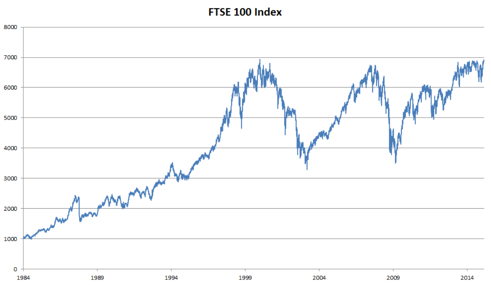

8.1 序列模型
1 统计工具

近 30 年的富时 100 指数
用 \(x_t\) 表示价格，即在 时间步（time step）\(t \in \mathbb{Z}^+\) 时，观察到的价格 \(x_t\)。假设一个交易员想在 \(t\) 日的股市中表现良好，于是通过以下途径预测 \(x_t\)：
\(x_t \sim P(x_t | x_{t-1}, \cdots, x_1)\)
1.1 自回归模型
为了实现这个预测，交易员可以使用回归模型。但有一个主要问题：输入数据的数量
- 在现实情况下相当长的序列 \(x_{t-1}, \cdots, x_1\) 可能是不必要的，因此我们只需要满足某个长度为 \(\tau\) 的时间跨度，即使用观测序列 \(x_{t-1}, \cdots, x_{t - \tau}\)。这种模型被称为 自回归模型
- 保留一些对过去观测的总结 \(h_t\)，并且同时更新预测 \(\hat{x_t}\) 和总结 \(h_t\)。这就产生了基于 \(\hat{x_t} = P(x_t | h_t)\) 估计 \(x_t\)，以及公式 \(h_t = g(h_{t-1}, x_{t-1})\) 更新的模型。由于 \(h_t\) 从未被观测到，这类模型也被称为 隐变量自回归模型
这两种情况都有一个显而易见的问题：如何生成训练数据？一个经典方法是使用历史观测来预测下一个未来观测。显然，我们并不指望时间会停滞不前。然而，一个常见的假设是虽然特定值 \(x_t\) 可能会改变，但是序列本身的动力学不会改变。这样的假设是合理的，因为新的动力学一定受新的数据影响，而我们不可能用目前所掌握的数据来预测新的动力学。统计学家称不变的动力学为 静止的（stationary）。因此，整个序列的估计值都将通过以下的方式获得：
\[
P(x_1, \cdots, x_T) = \prod\limits_{t=1}^T P(x_t | x_{t-1}, \cdots, x_1)
\]
注意，如果我们处理的是离散的对象（如单词），而不是连续的数字，则上述的考虑仍然有效。唯一的差别是，对于离散的对象，我们需要使用分类器而不是回归模型来估计 \(P(x_t | x_{t-1}, \cdots, x_1)\)
1.2 马尔可夫模型
在自回归模型的近似法中，我们使用 \(x_{t-1}, \cdots, x_{t - \tau}\) 而不是 \(x_{t-1}, \cdots, x_1\) 来估计。只要这种是近似精确的，我们就说序列满足 马尔可夫条件。特别是，如果 \(\tau = 1\)，得到一个 一阶马尔可夫模型，\(P(x)\) 由下式给出：
\[
P(x_1, \cdots, x_T) = \prod\limits_{t=1}^T P(x_t | x_{t-1}),\ P(x_1 | x_0) = P(x_1)
\]
当假设 \(x_t\) 仅是离散值时，这样的模型特别棒，因为在这种情况下，使用动态规划可以沿着马尔可夫链精确地计算结果。例如，我们可以高效地计算 \(P(x_{t+1} | x_{t-1}) = \sum\limits_{x_t} P(x_{t+1} | x_t)P(x_t | x_{t-1})\)
利用这一事实，我们只需要考虑过去观察中的一个非常短的历史：\(P(x_{t+1} | x_t, x_{t-1}) = P(x_{t+1}, x_t)\)
2 训练
首先，我们生成一些数据：使用正弦函数和一些可加性噪声来生成序列数据，时间步为 1，2，...，1000
| import torch
from torch import nn
from d2l import torch as d2l
T = 1000 # 总共产生1000个点
time = torch.arange(1, T + 1, dtype=torch.float32)
x = torch.sin(0.01 * time) + torch.normal(0, 0.2, (T,))
d2l.plot(time, [x], 'time', 'x', xlim=[1, 1000], figsize=(6, 3))
|
接下来，我们将这个序列转换为模型的特征－标签（feature-label）对。假设 \(\tau = 4\)，这样我们提供的数据样本就少了 4 个，解决方法：
- 如果拥有足够长的序列就丢弃这几项
- 用零填充序列
| tau = 4
features = torch.zeros((T - tau, tau))
for i in range(tau):
features[:, i] = x[i: T - tau + i]
labels = x[tau:].reshape((-1, 1))
batch_size, n_train = 16, 600
# 只有前n_train个样本用于训练
train_iter = d2l.load_array((features[:n_train], labels[:n_train]),
batch_size, is_train=True)
|
在这里，我们使用一个相当简单的架构训练模型： 一个拥有两个全连接层的多层感知机，ReLU 激活函数和平方损失
| # 初始化网络权重的函数
def init_weights(m):
if type(m) == nn.Linear:
nn.init.xavier_uniform_(m.weight)
# 一个简单的多层感知机
def get_net():
net = nn.Sequential(nn.Linear(4, 10),
nn.ReLU(),
nn.Linear(10, 1))
net.apply(init_weights)
return net
# 平方损失。注意：MSELoss计算平方误差时不带系数1/2
loss = nn.MSELoss(reduction='none')
|
现在，准备训练模型了
| def train(net, train_iter, loss, epochs, lr):
trainer = torch.optim.Adam(net.parameters(), lr)
for epoch in range(epochs):
for X, y in train_iter:
trainer.zero_grad()
l = loss(net(X), y)
l.sum().backward()
trainer.step()
print(f'epoch {epoch + 1}, '
f'loss: {d2l.evaluate_loss(net, train_iter, loss):f}')
net = get_net()
train(net, train_iter, loss, 5, 0.01)
|
3 预测
由于训练损失很小，因此我们期望模型能有很好的工作效果。让我们看看这在实践中意味着什么。首先是检查模型预测下一个时间步的能力，也就是单步预测
| onestep_preds = net(features)
d2l.plot([time, time[tau:]],
[x.detach().numpy(), onestep_preds.detach().numpy()], 'time',
'x', legend=['data', '1-step preds'], xlim=[1, 1000],
figsize=(6, 3))
|

通常，对于直到 \(x_t\) 的观测序列，其在时间步 \(t + k\) 处的预测输出 \(\hat{x}_{t+k}\) 称为 k 步预测。由于我们的观察已经到了 \(x_{604}\)，因此之后的数据需要使用我们自己的预测（而不是原始数据）来进行多步预测了。它的 k 步预测是 \(\hat{x}_{604+k}\)
| multistep_preds = torch.zeros(T)
multistep_preds[: n_train + tau] = x[: n_train + tau]
for i in range(n_train + tau, T):
multistep_preds[i] = net(
multistep_preds[i - tau:i].reshape((1, -1)))
d2l.plot([time, time[tau:], time[n_train + tau:]],
[x.detach().numpy(), onestep_preds.detach().numpy(),
multistep_preds[n_train + tau:].detach().numpy()], 'time',
'x', legend=['data', '1-step preds', 'multistep preds'],
xlim=[1, 1000], figsize=(6, 3))
|

绿线的预测显然并不理想。经过几个预测步骤之后，预测的结果很快就会衰减到一个常数。为什么这个算法效果这么差呢？事实是由于错误的累积：假设在步骤 1 之后，我们积累了一些错误 \(\epsilon_1 = \bar{\epsilon}\)。接着，步骤 2 的输入扰动了 \(\epsilon_1\)，结果积累的误差是按照次序的 \(\epsilon_2 = \bar{\epsilon} + c\epsilon_1\)，其中 c 为某个常数，后面的预测误差依此类推。因此误差可能会相当快地偏离真实的观测结果
基于 \(k = 1, 4, 16, 64\)，通过对整个序列预测的计算，让我们更仔细地看一下 k 步预测的困难
| max_steps = 64
features = torch.zeros((T - tau - max_steps + 1, tau + max_steps))
# 列i（i<tau）是来自x的观测，其时间步从（i）到（i+T-tau-max_steps+1）
for i in range(tau):
features[:, i] = x[i: i + T - tau - max_steps + 1]
# 列i（i>=tau）是来自（i-tau+1）步的预测，其时间步从（i）到（i+T-tau-max_steps+1）
for i in range(tau, tau + max_steps):
features[:, i] = net(features[:, i - tau:i]).reshape(-1)
steps = (1, 4, 16, 64)
d2l.plot([time[tau + i - 1: T - max_steps + i] for i in steps],
[features[:, (tau + i - 1)].detach().numpy() for i in steps], 'time', 'x',
legend=[f'{i}-step preds' for i in steps], xlim=[5, 1000],
figsize=(6, 3))
|